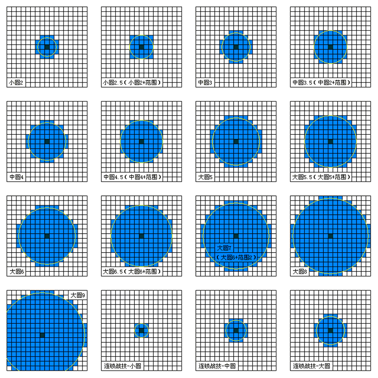

空之轨迹三部曲相关问题 FAQ全整理
前言
主要整理自T611AM、ArielSharon 和高晨水水在百度贴吧、游侠网、百度空间发布的各种FAQ，精选其中有参考价值的部分提供给各位。为了节省时间，我没有制作索引，所以请各位阅读时注意顺序，并尽量使用“页面查找”功能迅速找到你需要的答案。
参考内容
本FAQ基于以下两个帖子制作。
【新人必读】空之轨迹三部曲FAQ合集（20120605版） 作者 高晨水水
【图文新手教程】空之轨迹三部曲FAQ合集（9.8更新） 作者 ArielSharon
第一个是基于第二个写的，建议先看第一个，当找不到结果时再看二。
第一部分 综合问题 PART1 游戏安装运行与游戏进程的基本问题
1. 游戏版本好杂乱，到底用哪个版本？补丁又是什么？
空之轨迹三部曲由于引进与汉化过程颇为复杂，PC与PSP各自的破解与汉化进程也比较漫长，导致目前互联网上流传着各种各样的版本。
对于PC版，从2006年开始到2010年之间出现了不下十余种版本，建议使用2010年7月北京娱乐通公司更新的《空之轨迹精装合集》里面的三部游戏，又名"三豪版空之轨迹"，这个版本修正了之前的大量翻译错误，并为FC增添了战斗语音，支持Win7运行，同时FC与SC未加密，可以直接使用。目前能下载到三豪版空之轨迹的主要来源于两个地方，一个是3DM会员 幽雅 发布于2012年初的"空之轨迹三部曲最终完美珍藏版"，另一个是空之轨迹吧会员 科洛蒂娅公主 发布于2011年的 空之轨迹三豪最终修正版（2012年年初重新压制过，建议下载2012版"空之轨迹三豪2012压制"）。这两个版本没有本质区别，但目前只能用115下载，部分教育网PT站点提供高速下载服务。
对于没有下载以上两个版本的用户，如果下载到了2009年发布的3DM黄金典藏版或是游戏猪圈第16合辑的用户，这个跟最终版区别不大，其余用户建议使用科洛蒂娅公主发布的三豪版补丁转换为三豪版，补丁下载请到空之轨迹吧精品区寻找。
PSP版情况好于PC版，没有那么多复杂的版本，网络上的各版本区别不大，唯一要注意的是SC，建议使用合盘版（只有一个ISO的）与日文版，一般情况下用合盘版，部分中文版缺少的要素可以用日文版补足。
空轨的补丁分为两类，汉化升级补丁与第三方扩展补丁。PC的汉化补丁建议直接用上文提到的三豪补丁，PSP也有对应的汉化补丁。第三方扩展主要用于PC版。补丁的整合在这里http://tieba.baidu.com/p/1328402836 大多数补丁都进行了难度调整，还有的追加了一些第三方剧情，有些类似于MOD插件，建议多次通关之后再去挑战。
最后说明一个系统支持问题，空轨系列游戏原本是支持Win98~XP/Vista的32bit系统的，三豪版开始支持64bit和Win7，但是三豪版似乎不支持Win98了。考虑到Win98如今用户少得可怜，而且大多数是电脑高手，这些问题肯定有自己的解决方法。
2.安装后动画黑屏问题？游戏进行到一定时期后路边的树怎么变成白的了？
这是过去多年很少出现的问题，随着Win7的流行这两个问题逐渐成为主流问题。
黑屏问题是由于空之轨迹自带的过场动画使用了一种比较稀有的解码器，XP系统的时候安装游戏时会自动安装并注册这个解码器，到了Win7时代这个解码器其实是系统自带的，却没有注册，所以动画会放不出来。标准解决方法如下：卸载暴风影音、QQ影音等国产播放器，安装完美解码。理论上说对于大多数系统该方法能解决问题，如果失败建议在空之轨迹吧资源区寻找修正动画，替换游戏安装文件夹内的对应文件。
比较高端的解决方法是使用命令行，输入regsvr32 ir50_32.dll 即可解决。
路边的树变白一般被称为"圣诞树问题"，是随着intel公司的核芯显卡技术推广之后产生的。由于intel的i系列大多数CPU自带的核芯显卡驱动不完善，对部分老游戏支持不良，导致出现了这种问题。解决办法是利用电脑内另一块独立显卡进行工作。
Nvidia独显用户，桌面右键启动Nvidia控制中心（没有的请升级显卡驱动），在3D设置里面把空之轨迹的启动文件（一般是类似于ED6_FC.exe之类的文件）设置为高性能模式，之后启动游戏即可。
AMD（原ATI）用户，解决方法跟N卡一样，升级驱动到最新版，再设置为高性能独显模式。*AMD解决方案目前只有一个人声称测试成功，其他人按照该方法均未取得任何效果，不知道具体原因*
部分电脑可以用按键切换显卡的，请直接把电脑的显卡切换为独显即可。
3. 如何继承存档？继承存档有什么用？
PC版：请先把游戏升级到三豪版再来讨论继承问题，其余版本花样太多，在这里不提供解决办法。从SC开始都可以继承前作和本作的通关存档，SC继承FC的通关存档（FC结束时没有通关存档，这里的通关存档指的是打完最终BOSS之后任意时间的存档）之后可以获得通关奖励（小艾的等级在[35,40]之间的等级，根据FC准游击士等级获得奖励）和追加剧情（游戏进行过程中遇到FC中帮助过的人会有额外奖励），SC继承SC通关存档会继承到通关时的耀晶片、米拉、赌场的筹码、塞姆里亚石（如果用牌技师杰克换到过石头的话才会继承到）以及钓鱼手册和料理手册。
3 rd继承SC通关存档，会根据SC游击士等级获得对应的通关奖励；3rd继承3rd的通关存档会继承通关时的米拉、耀晶片、料理手册、塞姆里亚石（用掉了也会继承，只要曾经获得过就行*有资料说明塞姆里亚石最多继承16块，这个没有经过测试，具体问题未知*）
PSP版：三部曲都能继承自己的通关存档，SC与3rd都可以继承前作的通关存档，这个本人未测试，具体问题请自行百度。
4. 为什么我的游戏会黑屏？PSP里会死机？游戏里白屏?
黑屏问题前面讲过了。重申一遍，出问题的时候先下载三豪补丁打好了在问别的。
白屏一般是显卡驱动问题，请把显卡驱动升到最新版；如果是树木变白请看1.
PSP死机一般是系统问题，建议换系统、换引导、把CSO换成ISO（CSO格式压缩率较高，每次打开游戏需要现解压，占用系统资源）
5. 游戏在某个场景卡住出不来了，没存档怎么办？
如果是PC，请读存档界面第0页自动存档，如果是PSP，请节哀o(╯□╰)o多多存档是好习惯……（A姨那里有图片）
6. 改之理是什么？怎么用？
改之理是L大制作的一款空轨专用修改器，功能非常强大，下载请见置顶，使用方法请去改之理吧，有详细教程。
PS:每种物品各来一个最好别点，会改出剧情物品造成不良后果
7. 为什么FC没有战斗语音？是我下载的有问题么？
请升级游戏到三豪版，另外最好不要下载所谓的"FC语音补丁"，该补丁调整了部分战斗的难度，终章很多战斗变得异常艰难。
8. 为什么不能切换场景了？
看一看你的Tab键是不是按下去了，如果是的话请再按一下。
9. 空之轨迹是否能更换领队人物？最小化时会增加游戏时间吗？
领队人物可以在Tactics一栏的移动队列中更改，领队人物不同可能影响对话，比如FC终章打完最终BOSS后逛庆典遇到亚妮小约约领队和小艾领队亚妮说的话就会不一样0W0~最小化或者切换窗口时游戏自动暂停，不计算游戏时间。
10. PC版和PSP版的区别？
详见T大空间：http://hi.baidu.com/mxf03/blog/item/455fa299a063140e6e068c80.html
//注：本攻略资料集也有收录,见这里//
11. PC调难度的地方在哪儿？
别找了，没有这功能，喜欢调难度的的请去贴吧找"仿P补丁"。。。
12. 空轨的那些消耗EP很高的大范围攻击魔法打到敌人身上造成的伤害为什么跟小魔法差别不大？
就是这么设计的，所以如果敌人数量不多建议用范围较小的魔法，如果只有一个敌人建议用单体攻击魔法。
13. 想要游戏人物战斗语音和背景音乐
都不用下载的，游戏安装文件夹下面的BGM文件夹是背景音乐，想要战斗语音请查询改之理的附件里面的文档说明。
14. 战斗中，那些STR、DEF、SPD等等的增加减少BUFF是否会叠加？怎么计算的？
不会叠加，都是后加的BUFF覆盖先加的同类BUFF，注意同属性增加与减少不是同类BUFF，两者分别计算，不覆盖。特别的，对于FC，没有单独的ATS与ADF增加减少BUFF，所以ATS与ADF的BUFF分别与STR与DEF相同，注意遇到STR+20%这种BUFF时，ATS也会增加，而且增加的数值为STR的20%。
15. 贴吧里面整天说的"伤害修正值"是什么东西？
首先建议看看游戏里自带的游击士手册了解STR、DEF、ATS等等的含义，接下来的介绍才有实际意义。空轨的单次攻击造成的伤害是可以计算的，计算公式如下（所有的值计算出来之后需要计算浮动，最大浮动值是总值的±15%，伤害值基本符合正态分布），其中p=属性有效率%（属性有效率每个敌人都有，装上情报就能看见）
普通攻击D=3.38×STR×p-2.82×DEF（D≥0，当等式小于0时D=0或1）
魔法攻击D=4.1×ATS×p-2.8×ADF+3.3×伤害修正×属性有效率
普通战技D=3.38×（STR+伤害修正）×p-2.82×DEF（部分魔法属性的战技计算采用魔法伤害公式）
S战技D=3.38×（STR+k×伤害修正）×p-2.82×DEF
（对于100~199的S战技，k=（0.51+人物等级×0.005）×2，对于200CP的S战技，k=（0.51+人物等级×0.005）×3）
这里的伤害修正值对于每一个确定的魔法与战技都是一定的，具体每个魔法和战技的伤害修正值有多少请翻阅T611AM的文章
http://hi.baidu.com/mxf03/blog/item/2befbec2aa26ed1d0ef477de.html
16. 经常有人谈论的驱动、硬直、ST、AT都是什么？跟SPD有什么关系？
AT是指战斗中时间流动的单位，有点近似于我们现实中的时间单位秒，可以从左侧AT条直观的看见；ST是衡量一个招式（物理攻击、移动、使用道具、魔法、战技等等）耗费行动值大小的量，实际消耗AT=100×ST/SPD（取整），由此可见AT越大消耗的时间越长。普通攻击的ST为30，移动与使用道具的ST均为20，其它战技的ST请翻阅上文15.的文章。魔法的ST分为两部分，从发出魔法指令到放出魔法为驱动ST，放出魔法到下一次行动为硬直ST，具体也请参阅15.的文章。
由上文分析可知，SPD对于队员的战斗意义重大，更高的SPD将使得队员有更多的出手次数，因此建议所有队员装备提高行动力的回路和装备。对于法师来说，将重要的魔法尽快发出是最主要的任务，因此可以有效减少驱动时间的回路驱动2是空轨中很受欢迎的回路。
17. 求个存档。。。
本攻略集附录II中有下载链接（PC版的，不需要互联网即可下载）
PSP的存档？这个据说跟系统有关，所有机器都能用的存档貌似没见过
18. 噩梦难度XXX打不过，XXX自虐补丁XXX打不过。。。
你自己求自虐别来找我，我不管，想自虐的请先把战斗系统研究的滚瓜烂熟再去，研究完之后你就比我强了，我自然没资格教你怎么玩了= =
19. 全屏不能
Config里面可以设置的，不过很多机器全屏之后有黑边。想解决黑边请用以下方法（涉及注册表修改，请慎用）
1.在开始搜索框输入regedit打开注册表
2.定位到
HKEY_LOCAL_MACHINE------SYSTEM------ControlSet001-------Control-------GraphicsDrivers-------Configuration------然后右键点击Configuration
3. 选择查找，输入Scaling，在右框内即可看到scaling，右键scaling选择修改，将数值改为3即可，原值为4。
修改注册表应该可以让游戏全屏的，不过里面的人会有些臃肿(宽屏)..
PART2 游戏剧情相关
1. 为什么我玩的空轨人物一开始就有几十级呢？
英雄传说6空之轨迹系列一共有三部，由于三部的剧情是连贯的，SC,3RD的人物等级分别是接续前作的，FC的主角初始等级为3级，SC为35级（如果继承前作，等级会在35-40级之间），3RD为90级，为了能够更好的享受空轨系列的剧情，建议按照FC,SC,3RD的顺序玩
2. 为什么一直在飞行船上下不来?
请和飞行船上所有人对话后切换场景（定期船共有四层，到达乘客席后上面还有一层，机长室等地点也要去，如果遇到是数个人对话的，比如一对母女在对话，也请与这几人全部对话一遍，有些会触发特殊剧情的可能需要对话2次）
3. FC、SC对话中不同的选项有什么用？影响结局么？
FCSC中对话选项大多是影响BP的，对结局无影响，结局是固定只有一个的
部分选项对BP无影响，只影响接下来的对话，如FC送老卡出门时的选项，具体见游戏流程攻略，攻略中未说明有影响的就无影响
SC一章选择雪拉/阿加特会影响1-3章的固定队员（选雪拉固定为雪拉，选阿加特固定为阿加特），由于队员的不同会有不同的对话，还会小小的影响某些支线的剧情,不过不会影响支线的完成
4. 搜集书籍有什么用？少拿了书要紧么？
FC搜集红曜石，SC收集牌技师杰克可找人换男女主角之一的最终武器（PSP版SC可选择全人物的最终武器）
FC红曜石只有1，2卷过了剧情还可在柏斯超市购得，其他都只能剧情获得，错过就没了，只能改出来了
SC牌技师只有2卷可在八章回卢安赌场换，6卷可在柏斯超市购得，其他也只能剧情获得
5. BP是什么，有什么用，FC,SC满BP多少？
BP是衡量游击士等级的标志，BP提升到一定程度可获得游击士奖励，在继承时还会影响继承奖励，具体继承奖励见SC、3RD问题篇。FC满BP368,SC382（SC要达到A级游击士需要380BP，比FC严格很多）
6. 为什么钓鱼在！出现时点了鼠标左键还是跑了
那是因为钓到大鱼了，需要多多按左键或回车或空格才能把鱼钓起
7. 为什么我主线和支线已经做完了，但是过场景时队中人物提醒有任务还未完成或者有东西未归还？
先检查任务中借来的东西有没有还回去，如果还了那八成是用改之理点了每种物品各来一个，改出了剧情物品，需要把剧情物品数量改回去再重新进游戏
8. 在一个游击士支部完成的任务可以在另外的支部报告么？
可以，不过请尽量在主线任务结束前报告，FC终章如果到解放离宫后还未报告很可能出现已完成任务无法报告的情况。
PART3：战斗系统相关：
1.游戏中Parameter部分提及的人物属性都代表什么？有什么作用？
STR：人物的攻击力，一点STR能提高3.38点物理伤害，对菜刀来说最重要的属性之一
DEF：人物的防御力，一点DEF能降低2.82点物理伤害，这属性在空轨中并不重要
ATS：人物的魔法攻击力，一点ATS能提高4.1点魔法伤害，对法师最重要的属性之一
ADF：人物的魔法防御力，一点ADF能降低2.8点魔法伤害，不重要的属性+1
SPD：人物的速度，直接决定战技魔法等行动的AT(行动栏上时间）消耗，可以说是空轨中最重要的属性，战技魔法AT=ST*100/SPD，详细见博士的AT行动理论（精品区）和T大空间
DEX： 人物的命中，DEX越高命中率越高，由于空轨中MISS本来就不多，这个属性并不重要（人物MISS率太高看看是否装备了-DEX的装备，比如3RD狩猎重铠-50DEX）
AGL：人物的回避率，不重要的属性
MOV：人物的移动范围，对菜刀更有用些，在不损失其他属性的情况下堆高MOV还是不错的
RNG：武器的攻击范围
2.S技是什么？抢S是什么？
S技就是人物的必杀技，当人物CP在100以上时才可以使用，攻击S技的伤害比普通战技高许多，没有距离限制，而且不会MISS，使用一次S技需要消耗人物所有的CP，200CP的攻击S技的伤害是CP在100-199之间的S技1.5倍，CP199的S技的伤害与效果和CP100的S技完全一样，200CP的非攻击S技通常有特殊效果，如光明之环的+50%DEF
用键盘上的1234数字键也可抢S（1234分别对应战斗界面从左至右的4人），SC还可在第一个人行动前抢S，比如被玲偷袭那场就可以用数字键抢S把玲秒掉
S技的好处之一是可以无视行动顺序，点击人物上方红球就可以无视行动顺序爆S，但是点后就不能反悔，当人物S技不只一个时需要设置S爆发技，被设置为S爆发技的S技才能无视行动顺序爆S，在Tactics栏可以设置S爆发技
抢S可以多多利用行动回合，但是要注意S技的硬直时间（冷却时间）一般比较长
3.为什么升级了人物的EP却不增加？
空轨的导力系统比较特别，人物的EP并不随人物的等级数量增加，而与结晶孔的开孔（仅限FC）与升级状况（仅限SC,3RD）有关，要提高人物的EP上限请开封人物的结晶孔或者升级人物的结晶孔，开封/升级的结晶孔离中心孔越远，提高的EP上限就越多
4.回路怎么合成？低级回路能用来合成高级回路么？耀珠是什么，能合成么？范围回路的作用？
回路的入手方式有宝箱开出、任务(3RD门）奖励、人物赠送（FC中央工房遇袭后与工房门口某人对话可得石化之刃）、工房合成、游击士等级奖励。普通回路在工房(3RD是方石石碑，庭院石碑可以合成各星层石碑能合成的所有回路）可以合成，需要消耗耀晶片，而且只能用耀晶片合成，低级回路用于无法合成高级回路
耀珠是SC,3RD中独有的5级普通回路（需要3级结晶孔才能装上，SC第七章能开3级孔，3RD第一章就可以），在宝箱中可以开出全耀珠一套，还可以自己合成（SC终章方舟站台网络商城，3RD五章石碑）
耀珠与普通回路的对应关系是红曜珠=攻击5，苍耀珠=精神5，琥耀珠=防御5，水耀珠=HP5，风耀珠=回避5，翠耀珠=魔防5，银耀珠=EP5,金耀珠=省EP5,木耀珠=妨害5，黑耀珠=行动力5，幻耀珠=命中5，移动回路最高3级，范围回路FCSC只有1级，3RD也只有2级，驱动回路只有2级（驱动2驱动时间-70%。PSP版SC,3RD有刻曜珠，相当于驱动3，驱动时间-90%，但是人物属性减的相当厉害，只能给辅助用，PSP版SC中文版有BUG拿不到刻耀）
范围回路的作用是增加范围魔法的效力范围（对战技无效，对单体魔法也无效），具体效果见图

5.晶片奖励是什么，有什么用？如何抢晶片奖励？战斗中晶片获得有上限么？
空轨中的耀晶片（Sepith）非常重要，用于合成结晶回路，开封/升级结晶孔，还可以换钱。晶片奖励是行动栏奖励（AT奖励）的一种，在遇到晶片奖励的时候使用普通攻击、战技、连锁战技(仅限SC,3RD）、魔法攻击敌人（必须命中，如果MISS则无法抢到奖励）可以抢夺敌人身上的晶片，具体抢夺数量与普攻/战技/魔法的打击次数有关，一次打击次数可抢夺敌人身上1/10的晶片，打击次数具体见T大空间魔法战技表，比较好的抢晶片战技有樱花无双击、炮射冲击、女王之怒、机~枪扫射、八叶灭杀等，最好的抢晶片魔法是风之领域和龙卷火焰。
PS：如果被敌方抢到晶片奖励并攻击我方，我方会按比例损失身上已有的晶片，即使战斗胜利依然会损失晶片，注意尽量不要被敌方抢到晶片奖励（敌人遇到晶片奖励的时候来个机~枪扫射...那晶片掉的可真是壮观，╮(╯_╰)╭偶的心也在滴血啊滴血）
PS2：神父的牺牲之箭在抢到晶片奖励时放也会使我方损失晶片，所以在抢到晶片奖励的时候千万不要用牺牲之箭
FC/SC每场战斗获得晶片上限为每种晶片70个，3RD为每种晶片300
6.人物的回路怎么配好？为什么我回路属性够了却合不出魔法？使用魔法会消耗耀晶片么？
这个问题请参考本人的前作，基础部分在3RD，另外游击士手册中也有详细的说明，耀珠与普通回路的对应关系是红曜珠=攻击5，苍耀珠=精神5，琥耀珠=防御5，水耀珠=HP5，风耀珠=回避5，翠耀珠=魔防5，银耀珠=EP5,金耀珠=省EP5,木耀珠=妨害5，黑耀珠=行动力5，幻耀珠=命中5
如果回路属性值够了却合不出魔法，请检查回路是不是装在同一条回路链上了
使用魔法只消耗EP，不会损失晶片
帖子地址：
FCSC：http://tieba.baidu.com/f?kz=605863234
3RD：http://tieba.baidu.com/f?kz=599705198
建议多看看游击士手册/星杯手册，里面的记录已经很详细了
7.队友离队装备回路怎么办?
队友如果长期离队回路装备会自动卸下，不必担心
8.如何升级和刷耀片比较快，天使羊是什么，怎么一打就逃跑，砍过去都是MISS?
FC/SC升级刷耀片的最佳选择就是刷天使羊，天使羊不仅有其他小怪无法比拟的经验，还有相当多的耀片。羊的回避率极高，普通攻击和战技基本无效。SC羊怪物随机带，ADF不高，用时空幻属性可以打动，打羊前期主要靠攻击料理和S技，后期靠死亡咆哮。PS：羊的速度很快，建议用偷袭的方式打羊
SC携带羊的魔兽看这里
9.免费回复点位置？
SC:布莱特家/洛连特地下水路/古罗尼山道关所/迷雾峡谷东边小屋/卡鲁迪亚隧道内桥边/卢安学院地下遗迹/亚尔摩村温泉浴室，可回CP/温泉源流一处温泉,可回CP/中枢塔6层
10.游戏中需要给板凳练级么？
板凳等级越低后面打怪获得的经验越多，打一只小怪就可以升很多级，不必担心板凳的等级问题
11.同时装备美臭阳炎叶隐回路，效果怎么算？
同时装备这三个回路的状况下，叶隐效果覆盖阳炎覆盖美臭，所以如果装了有美臭效果的回路，只需要队伍里同时有人装备了有阳炎或者叶隐效果的回路就不会被怪物追了
12.CP怎么长的有快有慢，怎么攒CP？斗魂系列有何作用，增长CP的效果如何计算？
CP增长与我方/敌方攻击造成伤害占敌方/我方的血量有关，如果我方战技魔法等只打掉对方少量血，CP增长的会比较多，如果秒杀对方CP就几乎不增长。无斗魂系列情况下战技涨CP上限为每打中一人增长5点（双连击算2次攻击，可涨10点），魔法每打中一人10点。挨打CP按照扣血比例CP增长从5点到40点不等，
斗魂系列头巾与腰带增长CP的方式不同，不同名字的斗魂系列饰品效果可叠加
装备斗魂扎头巾后打人CP增长*1.4倍
挨打头巾系列CP增长全为3倍
装备斗魂腰带后左边行动栏每过一个行动回合（即一格）增长3CP
装备斗魂扎头巾后打人CP增长*1.4倍 其实也是1.5倍 空轨里双头巾的累乘是有计算顺序的：头巾 超头巾 月刻，每一步计算有了小数点就把小数点后的省掉，这就是月刻和头巾的不同之处，其实都是1.5倍，但是双头巾时效果却不一样：戴头巾+超头巾 5*1.5*2=14 戴月刻+超头巾 5*2*1.5=15
13.装备XX刃/理后使用魔法，能让魔法带上XX刃/理的效果么？
XX刃/理只对普攻/战技有效，对魔法无效
14.死之刃对BOSS有效么，死刃2怎么用？
BOSS要是不免疫即死那还叫BOSS么……目前已知的吃即死的非杂兵BOSS为FC竞技场卡露娜
死之刃2的效果是100%即死，但是生效一次该回路就会消失（即使被敌方resist了也一样会消失）。装备死刃2后使用群攻战技，只有第一个被打中的敌人会中即死，比如用漆黑之牙同时打3只羊，装备死刃2后只有一只羊会被即死。
15.状态提升可叠加么？增加的是裸值还是带装备值？行动栏中！奖励（暴击）可提升加状态的效果么？
单独的状态提升/下降不能叠加，前面的覆盖后面的，比如金叔先加龙神再加强音，STR就只加25%。状态提升与状态下降可叠加，比如一个人可以同时有STR提升和STR下降两种状态。
理论上所有的状态提升下降都加减的裸值，但是FC的部分状态提升比较特别，加的是装备值，给我方加个结晶防护很好很强大。。。
行动栏中的！号奖励只提升回复（比如原先加血2000，有！号就是加3000）与攻击的效果。不能提升加状态的效果。
16.科洛丝的斗魂能减敌人魔攻魔防么？小艾的助威能加魔攻么？行动栏的STR奖励加魔攻么？
FC中人物头上状态的状态提升/下降标志STR包含ATS，DEF包含ADF，意思就是如果人物的STR处于提升/下降状态，那么他的ATS也处于提升/下降状态，如果DEF处于提升/下降状态，那么ADF也处于提升/下降状态，所以说FC版的斗魂是神技。。。被基库一啄敌人就废了，而且FC的BOSS除了幻想乐曲都吃能力下降（最终迷宫打凯姐放炽炎地狱她居然还吃气绝。。。⊙﹏⊙b），SC不吃能力下降的BOSS也不多。
FC中助威 斗魂之类技能对ATS ADF的加减是这么算的 比如斗魂作用是STR DEF -50% 实际效果为 STR <- STR-STR*50% DEF <- DEF-DEF*50% ATS <- ATS-STR*50% ADF <- ADF-DEF*50% 所以你会发现真的是神技 助威同理
PS：SC,3RD人物头上状态的状态提升/下降标志STR不包含ATS，DEF不包含ADF，所以小艾助威不能加魔攻，科洛丝斗魂不能减敌人魔攻魔防了
无论是FC,SC还是3RD，行动栏的STR奖励都同时奖励ATS，所以法师抢STR奖励 也有效
17.结晶回路加减属性算装备值么？
FC,SC算装备值
18.防止全状态不能的饰品可以防止即死（一击战斗不能）么？
可以，饰品说明中写的战斗不能状态除外中指的战斗不能状态与一击战斗不能不同
一击战斗不能：是指攻击无视伤害立即使目标HP变为0造成战斗不能的状态，比如某人打小怪攻击是0，但是他装备了死之理，死之理的即死效果如果发生，就能让小怪直接领便当了
战斗不能：是指人物HP被扣到0了，就算装了神圣挂链之类的玩意儿，人被打到没血了当然会扑街，要不然装神圣挂链什么的不就无敌了
19.XX刃/理的效果可与人物战技中的附带效果叠加么？
可以，XX刃/理的效果与人物战技的附带效果分别判定，互不影响。
以小约FC的胧为例，即死率为20%，死之刃1即死率为10%，那么小约使用胧时，胧的即死效果与死之刃的即死效果都不触发的概率是80%*90%=72%，装备死刃后胧的即死率就能提高到28%
20.必杀之刃和！号能叠加么？
当然不能，要不然一个暴击1.5倍伤害，两个叠加不就变2.25倍伤害了
21.物理判定、魔法伤害什么意思？
物理判定的意思是攻击算作物理攻击，魔法伤害的意思是攻击造成的伤害值以ATS和对方ADF计算。
BOSS的C技只能证明是物理判定，不能证明是物理伤害。
我方战技中物理判定，魔法伤害的情况只有3RD公主的圣星光旋（SC圣星依然是物理伤害，不是魔法伤害，所以很弱，3RD前期圣星伤害很高，后期能轻松秒深渊大羊）
22.为什么我的道具栏里有些前面有倒三角的攻击料理一下就能把敌人秒了？物理反射、魔法反射回路正常游戏能拿到么？
料理前面有倒三角的都是修改出来的料理。。。无法正常获得，空轨中惟一可以正常获得的BUG料理只有SC粗骨肉棒（实际DEF+200%)//补注：从2012.7开始空之轨迹吧科洛蒂娅公主提供的游戏版本中该BUG已经修复，粗骨肉棒的BUFF改回到20%。//
物理反射、魔法反射回路不修改无法获得。
23.科洛丝的光明之环怎么虽然救起了战斗不能的队员但是只回了一点点血？
游戏设定如此，复活战斗不能的队员的回血量是另外设置的，回血量见此，HPXXXX回复那部分括号里的就是救起战斗不能的队员后的回血量。
S 光明之环：回复S战技：大圆8•复活、HP1500（500）回复、CP200时追加DEF+50%效果（SC：回复S战技：大圆8•复活、HP3500（500）回复、CP200时追加DEF+50%效果）
S 光明之环II：回复S战技：大圆9•复活、HP12000（1700）回复、CP200时追加DEF+50%效果）
S 光明之环III：（回复S战技：大圆9•复活、HP23000（3500）回复、CP200时追加DEF+50%效果）
24.攻击料理的攻击如何计算？
PC版攻击料理STR=料理自身STR，无加成。PSP版SC攻击料理STR=料理自身STR+人物STR（如果加过状态如加过强音之力等，以加状态后的人物STR计算），PSP版3RD攻击料理不再有人物STR加成
PS：攻击料理强制命中，可以用来刷羊
25.入场AT（入场顺序）与何有关？两个人AT相同时，顺序如何排列？
入场AT浮动与人物SPD和walk place有关。SPD较高，walk place在前的人容易排在前面（人物的移动队列可在Tactics里调整），另外，入场AT一般优先我方，只要和敌人SPD相差不是太大，基本都是我方先动的
两个人同时达到X AT，则后达到X AT的人顺序在前
天堂之吻AT清零后的顺序与清零前人物AT顺序相同
26.我打不过XX...
。。。这是技术问题。。。还有很有可能是回路装备配的有问题，比如菜刀装琥法师装翠，没行动力没驱动没穿SPD装
如果你打过FC/SC语音补丁或是其他的自虐补丁，欢迎和我一起加入自虐MODE之旅~
吧里右边七曜映像（视频区）有某些战斗的教学视频，可以找找看
视频区链接，自虐补丁可参考铁血飞的视频
http://tieba.baidu.com/%BF%D5%D6%AE%B9%EC%BC%A3/shipin/all/
科洛丝希琳对普通难度很有心得，他的视频可去科洛丝吧看
http://tieba.baidu.com/%BF%C6%C2%E5%CB%BF/shipin/all/
27.人物的推荐用法和装备？
这个我的回路配法贴里也有提到过人物用法
http://tieba.baidu.com/f?kz=605863234
http://tieba.baidu.com/f?kz=599705198
装备方面FC没什么可选择的，就是防状态饰品和斗魂系列，最多再加个替身木偶
SC推荐SPD装和斗魂系列，科洛丝推荐女伯爵+帕森农神靴/魔力鞋+魔力宝珠+任意其他宝珠/圣石/预警之铃（不推荐深红眼眸，减SPD，深红要用也是给雪拉调整SPD用），阿加特推荐男骑士机甲+双猛虎（反正他基本无限S流，放了S也不指望他能很快再行动，还是直接雪拉抽上来吧，猛虎之心宝箱中可以开一个，钓鱼可以无限钓）
FC篇：
1. 为什么我一开始的工房出不去？
请在小艾的结晶孔上装HP1,在小约的结晶孔上装行动力1,因为雪拉姐姐之前要求2人中要有一人出回复魔法，小约孔限制装时属性回路，只有让小艾装HP1出回复了。
2. 打不过跳跳猫
等雪拉加入之后再来，去的太早会死的很惨。当然低等级也可以过，玩过后面的游戏的老手可以试着用支线任务获得的妨害2合出风之领域与风之守护。
3. 帕赛尔农场怎么走？
出城往西走，注意看右上角的小地图，切换过一次场景就能在地图中看到帕赛尔农场方向了。
4. 有个叫菠萝怪的通缉魔兽找不到
请翻阅A姨的地图，今后FC找不到路了都请先翻地图再来问
http://tieba.baidu.com/p/654842813
5. 序章，找到记者奈尔为什么不能对话？
要先去旅店跟接待员对话才能去酒馆
6. FC荧光菇的位置？
玛鲁加山道的一个岔道里（A姨FAQ有图）
7. 柏斯收集食材任务中所需的魔兽鸟肉在何处？
序章去神秘森林路上的小鸟就会掉魔兽鸟肉,柏斯钢壁之路大鸟小鸟都掉鸟肉（注意鸟肉是有一定掉落概率的，有时候掉的很多，有时候一个没有，要有耐心）
8. 古罗尼山道宝箱怪中的呼啸母兽打不过
离它们近点它们比较容易用吸收养分，用暗影之矛的几率会小一些，能打断它们的魔法尽量打断，它们吃石化。
9. 红曜石第4卷和利贝尔通讯第3号都没拿到，攻略没写。
Sorry，你看的那份攻略中间缺了个316L，缺少的部分我发了，在那个帖子的539L。如果离得太远的话就用改之理改出来一个吧。。。
10. 第一章调查飞行船无法继续剧情了
请按照A姨攻略的539L地图右上角调查，调查完回到底层继续走就会触发剧情。
11. 梅威海道救吉米任务的地点以及寻找古地图的地点？
救吉米在卢安过去第二张地图的一线天处，寻找古地图要从紧挨卢安那张地图的海滩开始贴着海岸线（在海里）一直往南走，看到一个木桶就是了。
12. 烛台失窃任务提示的地点都是哪里？
去市长官邸与基尔巴特对话发生任务。之后按提示去卢安北街区的灯台～拉旺塔尔赌吧2F的轮盘～卢安发射场的搬运车～卢安南街区的起重机的顺序调查。而且最后得到「仓库的钥匙」与哈库对话就完成任务了。如果没有完成「仓库的钥匙」任务的话，这个任务就不能完成。
13. 王立学院进不去？提示有任务没完成
看看某支线里借来的钓鱼竿还了没，要是还了就是改了剧情物品造成的后果，得先把剧情物品改掉再重新进游戏
14. 学园祭任务怎么过？
一共三个任务，必须在艾丝蒂尔与科洛丝跟约修亚对话之前完成，完成之后的BP将与这一章的主线任务一起结算
（A）剿灭旧校舍的魔兽 BP：3，1000mira
从学院东边出口到旧校园遇到学生米克，对话后得知旧校舍有魔兽，打倒校舍内的四组魔兽完成任务。魔兽攻击几率带毒。同时小约这个时候不在队伍，情报等重要回路可以考虑之前就拆下来。此外在旧校舍能捡到EP填充剂和复苏药。
（B）装饰校园 BP：1，500mira
来到校园主楼前同勤务员巴克斯对话，开始帮助检查校园未装饰的地方。调查主楼和社团大楼之间的走廊，北边男生宿舍门口，礼堂大门的右边，然后2人告诉并帮助巴克斯装饰校园。
（C）收集研究资料 BP：1, 500mira
与社团大楼2楼资料室的罗基克对话，对方希望主角帮忙找3本《卢安经济史》。3本书分别在社团大楼2楼的男生更衣室椅子上，教职员室桌子上，男生宿舍阿吉尔德房间书桌上。找到后交还罗基克即可完成任务。
15. 市长家的那堆狗狗打不过
进去之前攒满CP，科洛丝的斗魂要多用，艾丝蒂尔的助威也很有效，开场站位建议三人都在一个角落里。另外这两个狗一个物防高一个魔防高
16. 托兰特平原救朵洛西，打不过那群狗
给小艾堆防御，开场对敌人放挑拨把攻击都引到艾丝蒂尔身上，约修亚在旁边一直用双连击和绝影就行了
17. 中央工房遇袭后那个图书管理员不在图书室了没法还书
那个图书管理员工房遇袭的时候跑了嘛，之后的剧情又是晚上她晚上又不上班，当然不在，等剧情后找个白天去她就在了，这个任务时限很长，第三章结束了再还也来得及（如果有书找到了没还，还会不让你出蔡斯）
18. 《爱尔贝啄木鸟的生态》这本书怎么拿？
首先确定你接下了这个补充任务，之后去亚尔摩温泉，在过道转一下视角就会看到离开过道的通道，绕水池一圈走到石头附近就会看到感叹号提示了。
19. 第三章打不过利塔街道通缉魔兽
此战只有艾约二人，建议开场前调整站位，都到后面，之后全力打死会用AT Delay的敌人，之后约修亚多用绝影，打死两只小怪之后消灭嗜血魔狮。
20. 第三章结束前，希德在雷斯顿要塞密道放走我们之后没过多久就死机了
经典BUG，请打上三豪补丁。不打的也可以，这里的闪退是随机的，敲门之前请存档，多走几次应该能过。
21. 王都地下水路的箱子看的到拿不到，有门打不开
剧情还没到，地下水路分西区东区北区，需要3个区域全部到过才能拿全宝箱，门这种先不要理它，只不过是联通东西区的而已
22. 艾尔贝离宫找不到老管家雷蒙德
西北角房间里，进去之后有一场剧情战。
23. 终章水道怎么进去？密门在哪里？
那个传说中的水道入口就是东街区地下水路入口……在那里打过通缉魔兽的应该都记得……密门在一张左边有三个小岔路（都是死路）的地图里，中间那个小岔路尽头就是
24. 洛伦斯少尉怎么打
上一战记得积攒CP，全员带放气绝的饰品。开场之后全员时间加速·改，艾丝蒂尔助威，科洛丝不停地斗魂，雪拉扎德如果正好在洛伦斯之前行动就用天堂之吻把艾丝蒂尔和科洛丝提到前面。洛伦斯少尉的HP不足2800时要果断用艾丝蒂尔和雪拉扎德的S技消灭之。
25. 封印区域走不出来？
空吧精品区攻略与剧情区里面有一份点击量上百万的FC图文攻略，没看过真是遗憾= =地图都在里面
26. 理查德打不过？
这场上的几位可都吃科洛丝的斗魂……
27. 幻想乐曲打不过？
注意放墙，死亡之怒只打CP最高的
SC篇（基本按剧情顺序）：
1. 不同BP继承FC有什么区别，为什么我看不到继承奖励?二周目可以继承什么？奖励什么时候能看到？
除了等级（只有小艾一人等级可继承，继承等级的下限35级，上限40级）一开始就能看到外，继承奖励要在训练场开始训练前才可以从克鲁茨手中获得，不用着急
克鲁茨给的继承奖励物品与FC中的准游击士BP有关 ：
只要继承FC存档便可得"机械手套"（饰品，STR+10 DEF+10）；
如果FC最后的BP高于345，除了上面的以外还可得"土人偶"（饰品，战斗不能时HPEPCP完全回复）"圣灵药"（药，复活且HP全满）；
如果BP达到368（最高）那么除了上面所有奖励外，还可以得到"幸运"（回路，时3地1空1，敌人掉落物品几率提高30%）
如果继承FC存档，根据FC的完成情况，在SC的支线任务中、以及和某些NPC对话时，可能会多得到一些奖励，如："阴阳"回路（第二章末的投宿客人的搜索支线任务）、还魂粉（第五章和柏斯超市药店老人对话）、苦西红柿三明治（第二章和蔡斯酒馆老板对话）等等。
PC二周目只能继承米拉、晶片、塞姆利亚石（石头要等序章整理装备后才能看到），PSP可继承等级、装备、道具等（继承装备就不会继承石头了，不然一块石头就能当两块用了）
2. 在森林里面找不到小艾的棍子？
和亚妮拉丝的剑放的很近，森林东北角，找到亚妮拉丝的剑以后，再往里走一点就有小艾的棍子（在迷宫请使用固定视角的方式记路，会好走很多，遇到树丛水流或者岔路注意转下视角看看有没有宝箱，看过了再把视角转回来，觉得空轨迷宫难的去玩仙剑练练手。。。）
另外空吧攻略与剧情区有鄙人的SC图文攻略，地图神马的都有，建议找不到路的去看看。。。
3. 打不过森林里和小要塞里的那两位童鞋
找好装备再去。。。
4. 通缉魔兽找不到...
上面说了我写的攻略了（http://tieba.baidu.com/p/1575251106 ），里面有绝大多数通缉魔兽的位置，第八章部分魔兽未标注，请看http://tieba.baidu.com/f?kz=608748815
5. 怪盗B任务好难
看攻略吧少年。。。不看也可以，慢慢找吧。
6. SC中的熊猫是什么，会掉什么东西？
SC熊猫卢安渡渡鸟随机携带，攻击力惊人，但是吃四属性魔法，偷袭+魔法可速秒，会掉小艾的武器家用晾衣杆（STR+150，在前期是好东西）
7. 阿伊纳街道通往绀碧之塔的岔路好像有堵透明墙，怎么都走不过去？
据说这是部分PSP版的BUG，出问题的话请重新下载ISO
8. 进入杰尼斯王立学院不让进，说什么相机没还？
你接了一个拍照任务，现在去绀碧之塔塔顶拍照再回到旅馆就能交任务了，不想去的现在要回到旅馆把相机还给人家，带着相机是进不去学院的。如果你已经做了这个任务并且已经归还了相机，说明你曾经用过改之理，赶快改回来。
9. 安放三个探测器那里，托兰特平原的那个要安在什么位置？
通往红莲之塔的那张地图右上角过去能到一张有石柱的地图，就在石柱附近（我的攻略地图里面标注了，请仔细找）
10. 下的PSP版SC怎么换盘?
换盘很麻烦，SC有合盘版，请去下载合盘版，大小只有1.7G，没有少东西，而且很方便。
分盘版到第3章末会要求换盘。
换盘时先待机，就是向上推一下开关（不要退出游戏），然后拔出记忆卡，记忆卡的位置在PSP的左边，用读卡器或借[别人的P]连接电脑，用P连接电脑先要数据线，一端插PSP上面的口，一端插电脑的USB接口，在PSP中选择设定下拉菜单的USB连接，按圈确定。在电脑中[把ISO2的名字改成和ISO1一样的名字]，用改名字后的ISO2[覆盖]记忆卡里的ISO1，再把记忆卡插回自己的P里，开机，按圈确定OK。
以后还要换，所以两个ISO都要留底。
也可以用CMF，在换盘时调出CMF，连接USB，将ISO1改名，并将ISO2改成和原ISO1相同的名字。回到游戏界面，按O确定。
11. 离宫找玲如何满分？
分别调查以下地点：展览室的红色的大壶、纹章之间的演讲台、会客室的餐桌下面、杜南公爵所在的房间，玲在谈话室雷蒙德旁边的柜台下面，注意中间不要和管家对话，否则扣BP，有人说直接找柜台下面也可拿全BP，我没试过，还是全部地点找一遍比较放心
12. 第三章主线去各地调查信件问题，为什么在通讯社找不到奈尔？
请先去完帝国和共和国的大使馆、利贝尔王宫之后再去通讯社。
13. 第三章在格兰赛尔找玲的任务，攻略要求找雪糕车对话，但卖雪糕的不见了？
同学你别在南街区逛了，逛多久都不会有的，去东街区转转吧。。。
14. 小约跟空贼们单独行动时为什么有时会隐身？
游戏BUG，再走一段就回来了
15. 小约怎么打赢穆拉？小乔怎么才能不死？从小约身上卸掉的装备能留给我方么？这里能修改么？
时改时减双连击，拿钥匙房间左边那条路过去的房间里的宝箱能开出攻击3，小约双连把穆拉击远了穆拉基本只会打小约
如果在穆拉战前把小约扒光，会发现他下次入队的时候身上没有回路了，得不偿失（--=根本就没得嘛）
这里如果修改了小约队伍里的物品。。。小艾队伍里的物品都会消失
16. 珍珠草怎么钓到？
洛连特地区的话，可以在艾利兹街道、米尔西街道、神秘森林的钓鱼点钓到（之前在艾尔贝离宫也有，机率比较高）。鱼饵使用田螺、蚯蚓或熬炼丸子。田螺几率高些，但是需要竹竿（王都北街区民居二楼NPC对话获赠），如果没有，便只能使用钓鱼竿+蚯蚓，看RP了，如果还钓不上，多喝RP填充剂。。。
17. 神秘森林怎么走？那几个雾魔怎么血越打越多了？
场景20次以内走出BP+3。在结界内按以下方式前进切换场景：东-东-北-北（此时有听见铃音的剧情）-北（该场景中部有一个装有范围回路的宝箱）-东-北-东——即可走出结界。。。两只大雾魔一只是物理吸收（用普通攻击、战技、攻击料理=给它补血），另一只是魔法吸收。注意看怪物情报。。。
18. 柏斯魔兽鸟肉和魔兽鸟蛋如何获得？
鸟肉打钢壁之路大鸟和鸡蛋头小鸟，鸟蛋打柏斯街道摇摆啄木鸟
19. 方舟怎么走？监禁室在那里？
咕~~(╯﹏╰)b方舟上那些蓝色的屏幕可都是地图啊，都告诉你怎么走了。水水写的SC攻略里面也有地图的，走不出去就看看吧= =
20. 方舟上打不过那个秘书
小艾站位后排穿全魔法装合出死亡咆哮（2个死咆或者3个泰坦咆哮可以群秒）或者银色荆棘可以轻松过，没有这2魔法的方舟客房里能捡到攻击料理，用攻击料理砸（那群猎兵吃状态）
21. 八章湖之主怎么才能钓到？钓那个有什么用？
第八章在瓦雷利亚湖畔的钓鱼点，使用鱼饵"黑鲑"（若没打翻译修正补丁，叫做"鲯鳅"）或"鲑鱼"（若没打翻译修正补丁，叫做"拖鱼"）即可钓上"霸王红鲑"（若没打翻译修正补丁，叫做"潜水家鲯鳅"）。钓竿用湖泊大帝II世会比较容易钓到。
钓上湖之主以后，会发生剧情，获得"特级钓师认定证书"，去王都的钓公师团总部即可购买鱼饵（此时必须在送完三个零力场之前，否则去王都以后无法再购买鱼饵，只能强制继续主线）。
22. 第八章买耀晶片的地方在哪里？SC第八章刷到多少晶片才够后面做耀珠的？
在王都西街区一处房子里，下水道入口北边，咖啡店附近，需要在送完三个零力场发生器之前，否则进入王都触发了主线就不能再到店里买晶片了。比价与埃尔赛尤号上相同（推荐在埃尔赛尤号上卖掉不用的耀片比如地片，另外柏斯耀片卖价也很高），一般的耀片3000米拉100个，空片9000，幻片6000
耀珠可在宝箱中开出完整一套，由于队伍中最多只能有4个人，因此只要准备3人份的耀珠就可以了，具体需要的各种晶片数量与队伍中菜刀和法师的数量有关，一般来说需要地水火风幻耀片3，4千，时空耀片5，6千
23. 为什么第八章去钟乳洞没有看到妖化企鹅？可以反复打么？
市面上流传的很多攻略有误，企鹅不在钟乳洞，在卡鲁迪亚隧道中最靠近蔡斯的岔路里，可以装上阳炎偷袭，只能打一次。我写的SC攻略地图里面有这个的标注（在第二章呢，回去翻一翻就找到了）。不可以反复打。
24. 第八章的八只蚯蚓怎么打？怎么只会放远方之激震？
蚯蚓的远方之激震只在受伤后放，一只一只打就不会被激震虐了 。要速杀请先准备苦西红柿三明治，小约或者红毛（用红毛需要他80级后出全屏S炎龙蹈海）装备翠耀石护符+斗魂扎头巾（最好别装必杀之理），开场爆S，打8只虫子会有56CP，再喂个西红柿就可以继续爆S，剩下的人都给小约或者红毛喂西红柿爆S，4个S就可以解决，怕4个S不能解决的就带雪拉天堂之吻提人继续喂(SPD最好是约最高，雪拉最低)
25. 能量/防护/魔防/魔力宝珠/圣石是什么？怎么获得？可以反复拿么？
宝珠可是好东西，不光STR/DEF/ADF/ATS+50，而且还+5点SPD（SC回路加属性算装备值，算上行动力回路+的更多），3点MOV，第八章去四轮之塔塔顶打蜗牛获得（每个塔上的蜗牛只能打一次，可以偷袭） 圣石各项属性都有加，但是SPD没有宝珠加的多，不如宝珠，因为宝珠只有4个，相对来说还是不错的饰品，这东西打妖化企鹅获得（虽然有2企鹅，但是只会掉1圣石，企鹅可以偷袭，注意隧道里要给菜刀装夜视眼镜防黑暗）
这种极品装备当然没办法反复拿，只能每种拿一个
26. 终章的耀珠在哪儿合成的？
不在工房了，都在车站的终端才能合成，调查终端选择"网络商城"即可，注意每一个车站都出售不同的耀珠。
27. SC终章救出空贼后，到站台使用福音要密码，密码找谁要？
去山猫号找吉尔，前提是触发过到站台使用福音没有密码的剧情
28. 中枢塔上一定要每层换人么？
中枢塔不像四轮之塔一样打对应BOSS就强制带特定角色，但是打痩狼带金，打幻铃带雪拉会有特别剧情（打怪盗带公主王子、打玲带提妲会有点特别对话，无特殊剧情），一周目想看剧情的话推荐带相应人物去，不在意剧情就没关系了。
29. 怪盗的囧状态（变大，变小）会有什么后果？他放分身怎么办？
囧状态见3RD战斗系统相关部分18问打本体分身就会消失，请带上情报/天眼回路，分身和本体的资料是不一样的。本体叫怪盗布鲁布兰，分身就叫布鲁布兰
30. 和幻惑之铃打时打到自己人了
露姐会施展幻术身影分离，这个时候如果打到分身分身会和我方队员交换位置，伤害会转嫁到我方队员身上（放死咆可能会把我方即死光哦）。打本体分身就会消失，请带上情报/天眼回路，分身和本体的资料是不一样的，分身身上没有晶片，经验是1。
31. 打不过剑帝
官方强化版剑帝SPD99，吃能力下降，非官方强化版剑帝SPD只有64，也不会分身
JD鬼炎斩自身范围半径6大圆，30%几率气绝。冥皇剑目标指定范围半径6大圆，30%几率冰冻。两S技伤害均为8000左右（官方加强版） 用时间减速和斗魂就好了
32. 终章打老怀被时空追放怎么办？
速战速决，被追放没关系，人过会会回来的（EP会被清0），但是如果四个人都处在被追放(VANISH)的状态，就GAME OVER了
33. 打蛾子蛾子卡住了不能动？
……把物理反射卸掉
34. 终战打大蛾子第三形态怎么我放了墙人还给蛾子弄没了？
你被蛾子拆地板了，这招叫灭界之审判，无视墙、无视替身木偶，而且被放到火星就回不来了。这一招蓄力的时候地上会有小黑圈，走出小黑圈就是了。
3RD篇：
PART1:游戏剧情相关（非战斗系统方面的问题全部在此）
1. 不同BP继承SC有什么区别，为什么我看不到继承奖励？3RD二周目可继承什么？
物品奖励无法一开始就看到，要在第一话开始后的剧情中获得 (庭院水池那张地图，去水池的路上有个岔路，通向一个圆台，中间发光的东西就是)
如果继承的SC存档是正游击士A级，继承可获得7种耀晶片各100，还有日之刻印（每回合CP+3）
如果继承的SC存档是正游击士B,B+级，可得7种耀晶片各100，还有月之刻印（CP增长*1.5倍，比头巾效果好，个人觉得比日刻实用。装备超头巾+月刻，如果S技范围内有7个敌人，就可以无限S了，超头巾+头巾需要8个敌人）
如果继承的SC存档是正游击士F——C+级的，就只能拿耀片了
PS：PSP版如果游击士是A级，可以同时拿日刻和月刻
3RD二周目PC版可继承米拉、晶片、塞姆利亚石（石头要一章庭院才能捡到，此后等五章结束始祖出现即可制最终武器），PSP版等级、装备、回路、手册等均能继承（若继承装备则无法继承石头，噩梦难度也可继承）
2. 为什么我的PSP不能继承SC？
3.90以下的系统不能继承SC，如果系统是3.90以上的，但是SC通关档是3.90以下的，也不能继承
3. 3rd图书收集，包括阅读第0话飞船上的书吗？
不包括，只有庭院的那些算
4. 第二星层第一个石碑在哪儿？
南街区东南角
5. 月之门1，提妲出来之后不知道该去做什么？再进去怎么还是那个剧情？
出来之后一直走就是了，还不懂的请去看我的攻略http://tieba.baidu.com/p/1608324565
月之门1后篇需要以后阿加特来了才能进，现在进不去。
6. 记忆之门都在哪里，怎么开？有时间限制么？奖励能不能反复拿？流程如何？如何查看门是否已开过以及是否符合条件？
在终章出发去幻影城前开门都可以。过门的奖励只有第一次进去能拿，门里战斗怪物掉的东西可以反复刷。
门的地址、进入条件、详细流程见此：
http://hi.baidu.com/arielsharon/blog/item/457cc1245ec617084c088dd2.html
至于查看门是否开过之类的问题……童鞋你从来不看星杯手册的么？
7. 星之门1怎么胜穆拉？
首先这一战输了也没有什么影响。穆拉开场第一次行动和进度条第21人次（也有人说是HP8000之后第二次行动）时会使用S技，要用技能挡住，所有的魔法和药都用来回复，磨到最后就能赢了。开场发现尤利娅没有任何魔法的同学，请立即下载三豪补丁，否则后面的战斗会遇到各种奇葩的战斗。
8. 开星门14要求太阳门所有难度都必须通过么？不同难度的奖励不一样么？
不要求，通过一个难度即可。不同难度奖励不同，不过太阳门1的难度选择不影响奖励
9. 我的方石界面里面有些传送点为什么是灰色的？
你没找到石碑。。有些石碑和周围场景颜色相近，仔细找找，一般星层第一个石碑都在星层进去的地方附近，其他石碑在打BOSS的地方前面
10. 为什么我在隐者之庭院解放封印石的时候，一下解放出来了好多人，剧情错乱？
同学你用修改器改太多了，如果之前用过"一样来一个"的话请读你之前没用过修改器的存档，如果只是改过封印石的数量，请把封印石改回去。同理，剧情物品请尽量不要改。
11. 无色的学舍怎么通过？怎么拿不到后门的钥匙？
打黑色的骑士，不要打彩色的，否则黑色骑士又会出现。
室外有4处黑色敌人，其中有2处很隐蔽，在角落或树下等位置，注意寻找，或者佩戴"隼眼"回路查看。
12. 在紫苑之家如何继续剧情？
调查礼拜堂正门、礼拜堂侧门、井、左边屋子每个房间，然后从左边房子的前门出来（不是有连廊的那个门）触发剧情。进入礼拜堂之后队里会只有凯文和莉丝两个人，注意给他们准备好装备回路。
13. 深渊是什么地方？我怎么没见过？
深渊在第七星层，终章出发前找始祖对话可开启
14. 深渊的几个BOSS打死拿到的石头有什么用？
玩过SC的都知道这货干嘛的，一块石头可以做一把最终武器，每周目可做4把
15. 深渊的大羊怎么打？
用科洛丝的圣星光旋打就能过了
16. 太阳门2的钓鱼游戏怎么过？
第一关：碧玉之星（忘了雨太公什么能不能用了）+川虫钓鲑鱼，再用鲑鱼+钢竿潜水艇钓凶暴巨鲇
第二关：高级钓鱼竿+蚯蚓为鱼饵或竹竿+熬练丸子钓鲤鱼和灌木螃蟹，再用鲤鱼+钢竿潜水艇钓凶暴巨鲇或用竹竿+灌木螃蟹钓叶绿螃蟹
第三关：海风之星+虾米钓狮鱼和暗鳜，再用海风之星+暗鳜钓凶暴或用钢竿潜水艇+狮鱼钓帝剑鱼
17. 武术大会要什么许可证，哪里拿？
开启困难模式和噩梦模式需要得到许可证（剧情物品），有两个地方可以得到许可证：
一个是在第六星层，镜中秘所3F一个蓝卡房间内的宝箱
另一个是在第七星层，深渊4的一个宝箱
得到任何一个地方的证以后，便可开启困难模式，通过困难模式，并且把两张证都得到以后，可以开启噩梦模式。
PS：太阳门3只有第一次（普通模式）需要带上金，开启后后面两个模式，以及再次参加普通模式都不再需要带金。
18. 打完黑骑士后方石的传送功能无法使用？
狭间内无法传送，请先走出狭间再传送
19. 星门15讲了什么？看不懂
http://tieba.baidu.com/f?kz=257921009 这里有解释，看了别回复，也别在空吧发贴问，实在想不明白的请去玩零之轨迹，那里有比较明确的解释
20. 最终话调查泉水，出现胆小鬼、勇者之类的话，什么意思？神镜、魔镜是什么？
3RD如果是PSP版最终话如果战斗次数大于300，逃跑300次以上可得魔镜，水属性回路（属性值水8、风6、幻4，50%几率反射魔法攻击，最大EP－30％）
战斗次数大于300，逃跑0次可得神镜，火属性回路（属性值地6、火8、空4，50%几率反射物理攻击，最大HP－20％）
满足条件后在最终话调查泉水获得。
PART2:战斗系统相关
1. 庭院的加CP的水多久可以喝一次？
每经过5场战斗可以喝一次。
2. 为什么进入翡翠回廊以后不能使用魔法？
童鞋乃无视回路破碎的剧情了么？╮(╯_╰)╭赶快回去重新合成回路
3. 3RD三大BUG人物都是谁？为什么理查德叫BUG理？
3RD三大BUG：理查德、雪拉扎德、提妲。
理查德，人称BUG理，各项数值都属于上游，各战技的硬直时间都非常短，尤其是光鬼斩无限连极其强大（SPD=234，光鬼AT=2），S技樱花残月是所有S技中附加伤害最高（ST只有28，比普攻还短），导力器相当不错，裸ATS也很高，还是血牛一只
雪拉扎德：天堂之吻无限提人，狐媚暗随无限连（SPD=167，狐媚AT=2,SPD=251，狐媚AT=1）
提妲：中后期有了高达之后一跃成为第一血牛，加上变身后高达装备值变裸值，高达战技和普攻的硬直又短（ST均为20，提妲SPD=223，高达AT=5，不过需要变高达后加时改），在加状态后攻击和速度都非常强悍
在速度和几个BUG人物差不多的时候，其他人的战技AT消耗基本都是十几（小艾金刚击ST22，PSP版尤利娅镜花水月ST只有10，AT消耗也比较少）
4. 连锁流是什么？怎么用？
连锁是SC,3RD独有的战斗元素，在SC就很强大，在3RD由于尤利娅和穆拉这两个连锁BUG人物的出现就更为强大，尤利娅连锁范围内所有目标攻击2下，穆拉连锁范围内中心目标（就是连锁时选择的那个单独的目标）攻击2下，其他所有人连锁时都只攻击1下。3RD尤穆亚/艾雪（对多个目标亚妮用陀螺舞比较适合，对单个目标小艾用助威比较适合，前期亚尼拿到利剑迅羽的话用她也比较合适）号称最强最凶恶四人组，3RD绝大部分BOSS包括最终BOSS（不过打大蝴蝶需要出一定数量暴击）都可以连锁秒掉。
5. PSP银之道炮车一下秒一个怎么办？第三章如何用范围2合成暗物质改？石碑没有范围2合
范围2是在二章石碑出现的，第三章金道和银道的石碑是没有范围2的，只有移动3
PS：庭院石碑可以合成各地石碑能够合成的所有回路
6. 放了暗物质改后放了个S技游戏就卡住了？
游戏BUG，只要在有人放过暗物质改后的下一回合抢单体S就会卡住
7. 星门5，星门6怎么过? 有个星门里全是会石化的小怪，怎么办？门内人物等级固定么？
星门5:风花+平砍+S技+EP全用来补血，加了风花理查德也不会多砍多少血，放心加吧，这场也可以用落叶延迟理查德（此门必须胜利才可拿亚尼专用武器利剑迅羽）
星门6：寒冰至尊蚀杀一击迅速推掉，红毛那场先放个任人宰割，然后想怎么虐就怎么虐
这三个星门（星门1、5、6）门内人物等级固定（月门2也是如此），想在门外多练级再进门是没用的
有石化小怪的门如果没戴防石化的饰品就站后排放死亡咆哮，这堆东西吃即死
8. 3RD中显示效果与实际效果不同的是魔法与战技是哪几个？
魔法虚弱领域，显示DEF-25%,实际-50%。战技亚妮拉丝风花阵，显示STR+30%，DEF-30%，实际STR+50%,DEF-30%
9. 3rd的斗魂系列物品除了继承外的都在哪里得到？
完成位于格林姆瑟尔小要塞的星之门6，可以得到1个超斗魂扎头巾作为奖励。
第六话的铁壁要塞，广场往东是停机坪，如果一开始去停机坪会被轰出来。等到打败司令部3F的卡西乌斯以后，就可以顺利进入停机坪了，里面有超斗魂腰带和超斗魂扎头巾各1个。
第六话的黑色方舟，有3件斗魂物品：前部第1层有超斗魂腰带1个，后部第1层有斗魂腰带1个，后部第2层有斗魂扎头巾1个。
10. 3RD猛虎之心、深红眼眸可以刷么？都在哪里
猛虎之心可以获得4个（有3个肯定可以拿到，有1个是BOSS有一定几率掉落）
1、第三星层——金之道，宝箱
2、第六星层——黑色方舟·圣堂，执行者3人组BOSS战，瘦狼瓦鲁特有50%几率掉落
3、炼狱，最后怀斯曼BOSS战，洛斯托尔姆必然掉落（偷窃也可得到，偷过后不再掉）
4、第七星层——深渊·1，宝箱
深红眼眸可以获得4个（均肯定可以拿到）
1、第二星层——王都码头北部仓库后面，宝箱
2、第四星层——巴斯塔尔水道，最后打完亚妮拉丝BOSS后最里面，宝箱
3、第四星层——卢·洛克尔训练场，最后BOSS战，阿斯塔尔特必然掉落（偷窃也可得到，偷过后不再掉）
4、炼狱，最后怀斯曼BOSS战，阿斯塔尔特必然掉落（偷窃也可得到，偷过后不再掉）
11. 提妲的导力装甲怎么学？给她装备防状态的物品怎么变高达后还会中状态？
阿加特入队后带阿加特、提妲过次月门1后篇就可以学到了，如果学不到说明你玩的是教育版，请去置顶下载修正补丁
导力装甲自带免疫毒、冻结、石化、睡眠、气绝、体型变化，其他异常状态（包括即死）不免疫，能力低下不免疫
所有武器/防具/饰品/回路，除了改变能力值之外的效果一律无效（斗魂，替身，幸福之石，怪盗斗篷，免疫状态，妨害，刃，理，情报，幸运，机功，耀脉，吸收，等等等等）
装甲HP=提妲HP*2
装甲STR裸值=提妲STR总值*1.2
装甲DEF裸值=提妲DEF总值*1.2
装甲SPD裸值=提妲SPD总值
装甲其他能力值和提妲无关，装甲ATS=0，ADF=0，AGL=0，DEX=100，MOV=8，RNG=0
12. 玲的新S技怎么学？
完成星门10以后，还要返回隐者之庭院一次玲才能学会新的S技，如果回庭院发生剧情了还学不到说明你玩的是教育版，请去置顶下载三豪补丁
13. 莉丝为什么没有S技？
莉丝第一个S技"天堂阻灭"打完第一话的BOSS后自动学会。如果打完BOSS还没学会。。你被教育了，去置顶下三豪补丁
14. 乔丝特为什么没有S技？
完成太阳门1以后才能学会S技"山猫号"（如果门没开要到六话打完空贼团才行），如果过了门还没学会。。你又被教育了，去置顶下三豪补丁
15. 为什么管家和雾香什么的会无限S技?
你再次被教育了，去置顶下三豪补丁
16. 为什么战斗中得到的物品没有显示？
受了这么多次教育的你。。应该去置顶下三豪补丁
17. 中了老卡裂甲断后游戏就卡住了？老卡打不过？
把物理反射回路卸掉，修改器用的要适度啊同学。老卡雷光击自身范围半径10大圆（范围内有2人以上使用），百烈击喜欢打离他最近的，带击退效果，裂甲断有2人以上与老卡一直线时使用（如果有人扑街的话只有1人也会用的，在SPD装的支撑下裂甲没什么威胁），凤凰烈波伤害13000-15000
18. 怪盗囧状态有什么后果？何解？露姐的分身怎么破？
变大-70%SPD，CP-20,魔法范围变小，MOV减半（这里的MOV为带装备值）
变小STR/DEF降低（STR-50%，DEF忘了），魔法范围变小，MOV减半（装备值）
解决方法：
治愈术、痊愈之药、全异常回复料理、光明之环、回复弹、神圣祈祷
露姐见SC篇
19. 为什么戴了防全状态异常无效化的物品还是会中状态？
早期中文版的翻译错误，3rd中的"天炎圣杯"和"闪光徽章"才是免疫全状态异常;"苍玉首饰"和"翡翠头环"只免疫能力低下,不免疫状态异常;"炽煌之冠"是状态异常和能力低下都免疫
20. 为什么到深渊底部没有看到大羊？羊怎么打不动?
深渊大羊的出现条件是打过深渊前面的三个BOSS。传送到深渊石碑BOSS会刷新，除非重打前面3个BOSS，否则就看不到羊了。
想要中途传送回庭院又不想错过大羊的，深渊底部打羊的地方前面有个星门15，传回庭院后再传送到星门15（千万别传到深渊石碑）
羊DEF很高，ADF不高，想打大羊最便捷的方法是公主圣星光旋直接秒（物理判定，魔法伤害，公主无需堆ATS，就出场等级都能秒，要是秒不掉除非你给她装猛虎之心或者翠耀珠什么的了），或者其他有无属性S技的人STR堆到3000+（随S技伤害附加的不同数字有浮动，有些人可能要堆到3200左右，神父的魔枪圣枪，理查德的残光破碎剑有属性，不能用）直接秒
堆STR推荐用修罗回路、猛虎之心、阿加特援助、最终武器
PS:小艾的太极轮和理查德的樱花残月由于附加伤害极高，无需堆高STR便可秒杀大羊，不过不如范围S有效率
21. 最终武器做给谁好？做了最终武器二周目还能拿石头么？
不推荐做给科洛丝（斩首剑2+60ATS，只比最终武器少20ATS）、奥利维尔（不加SPD和ATS，还不如用小夜曲）、雪拉扎德（如果她还放狐媚暗随或者用来连锁可以给她做一把，只放天堂之吻就没必要了）、凯文（圣枪清柱子无用，倒是可以趁蝴蝶转换属性时放，如果拿葱头辅助放墙就没必要给他）、莉丝（如果你觉得莉丝做菜刀很美或者要用来连锁，那我无话可说，否则我还是推荐+250ATS的幻影城宝箱货羔羊颂）、乔斯特（不加SPD，拿她放墙还不如用小夜曲，至于侧门BOSS旁那群天使小怪……虽然说她STR什么不怎么行，清清小怪还是可以的）、亚尼拉丝（PSP版带她过噩梦竞技场可拿强化版利剑迅羽，属性比最终武器还好，PC对她有爱的话给她做一把也无碍）
继承时塞姆利亚石的数量就是按最终武器的数量算的，如果一周目改出了16把武器，继承后就有16块石头
22. 幻影城要分4队打4个BOSS，请问每一队打完BOSS后有机会把装备和回路脱下来给另一队吗？
没机会，最终BOSS战是各门BOSS四连战，中间没有任何更换装备的机会。
每一队进入BOSS房（有红色地毯的房间再进去就是）前就是给这一队更换装备和回路的最后机会。所以需要给16个队员每个人都准备装备和回路。不过不用每个人都准备很好的，因为除了最终BOSS之外其它三个BOSS都非常好打。而且幻影城里面也有石碑（不在起点，在每一路终点附近），如果缺什么装备和回路到时候还可以买(装备没必要买，宝箱里可以开出16人份的装备和武器，是能捡到的装备里最好的，比店货好）。
23. 猫咪套装、小丑徽章、黑丝绸、优胜者、旅人武器都是什么？怎么获得？3RD刷装备、耀片和经验最好的地方是？
可爱猫咪套装、可爱猫咪拖鞋、忍者短布鞋都是加SPD的好装备，是魔兽掉落的，推荐刷第五话光影迷宫喧闹精灵（同时可获得大量水时属性耀片，在那里很容易刷到人手一个黑耀，而且数量多、容易秒）或者第六话周游道石像（各种晶片都还算多，在第六话时经验也多），刷这些装备耀片和经验就都有了╮(╯_╰)╭
黑丝绸，优胜者分别为女性专用装备和男性专用装备，黑丝绸3+200ATS，优胜者3+20SPD，是好东西，推荐深渊刷贝沃，深渊大羊也有5%几率掉这些东西
旅人武器是打魔兽获得的武器，第三章开始怪物有掉落，前期如果打出一把可以大幅提升战斗力，但是终章深渊处没必要刷旅人，因为旅人属性STR都比幻影城的低，只是相对对法师类有用一些，但是影响也不打（PSP旅人有加强，STR比幻影城武器加的多，不过也没高多少。。）
刷这些装备时请用乔斯特援助，并让装备有神眼+幸运+怪盗斗篷的人完成对魔兽的最后一击
怪物掉宝见此：
http://hi.baidu.com/arielsharon/blog/item/c75ad5fa92a928d6b58f3129.html
小丑徽章+40SPD（PSP+25SPD），是非常好用的饰品，普通竞技场基尔巴特必掉，可以无限刷
用小丑徽章的好处就是可以无限连……
24. 幸福之石有什么用？如何用它获得更多晶片？
装备幸福之石攻击敌人相当于抢到晶片奖励，装备幸福之石放风之领域是很HAPPY的事情~吧里有教学视频
25. 小约/理查德/亚妮拉丝等人所有的攻击都是miss，装了命中5也没用
同学你看看是不是DEX目前是0，是不是穿了什么降低DEX的装备（比如狩猎重铠），注意一旦DEX降为0怎么加命中都没用，因为命中回路是按照百分比增加命中率的，如果原本就是0就不会增加了
26. 利剑迅羽如何强化？刻耀珠怎么拿？
PSP独有的功能，噩梦竞技场带亚尼拉丝过剑帝+剑圣便可强化利剑迅羽，强化后的利剑迅羽属性比最终武器还好。刻耀亦是PSP独有，过太阳门5问答骨灰难度可获得，相当于驱动3，驱动时间-90%，ATS-15%,STR/DEF-20%。
PSP版SC也有刻耀珠，不过中文版有BUG拿不到……
27. 最终章没钱买装备了怎么办？去幻影城前要练级么？
装备什么不用买，顶多给去深渊的那几个买买武器，防具当然是用猫咪装之类刷来的东西（懒得刷的幻影城宝箱里也能开出防具），饰品小丑斗魂最高（深红和猛虎也可以用用，X帝徽章这种什么属性都加但是都加的不多的没什么用，顶多是作为猛虎之类的替代品），旅人武器也没必要刷，后面幻影城宝箱有更好的。
幻影城小怪很弱，经验暴多，用偷袭速秒之（菜刀级别太低砍不动就用魔法秒杀），去幻影城前根本不用练级，在幻影城可轻松升到140+。
28. 幻影城怎么分组好？
PC普通难度随便分分，有爱就行，硬要说推荐的话建议侧门每队分个有大圆以上范围S的秒小怪，大门分个有全屏S的清柱子
PS：打金色巨人带玲有特殊对话，提妲如果用导力装甲作战建议不走正门，BOSS旁边的敌人会用带即死效果的死亡咆哮。
29. 满血挨圣痕炮被团灭?为什么装了身之理挨圣痕炮伤害加倍了？被圣痕气绝冰冻？
圣痕固定AI血量降低到50%以下放炮，ADF为0时，圣痕炮伤害27241.5（有伤害浮动），无法在其蓄力(超理力蓄积)时解决它的话就注意放墙挡住（想用星杯的记得把凯文S爆发技改成星杯）。
裂空断（直线技，会使人气绝）距离6，离它7格就不会放，魔苍弓（全屏技，会使人冰冻）可沉默十字或打断技打断